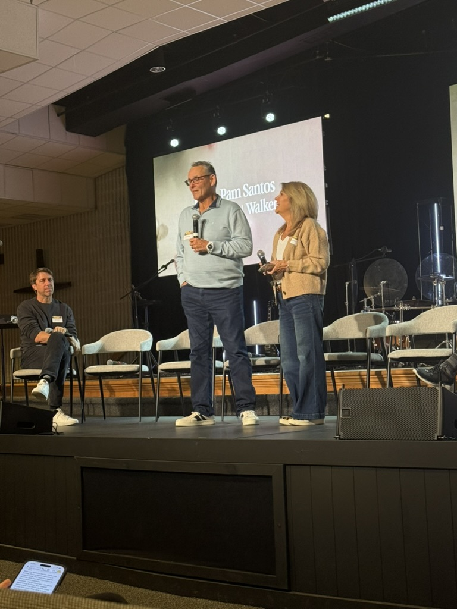

Hal F. Santos
Pastor, coach & leadership guide
Hal brings 40+ years of leadership experience across churches, nonprofits, businesses, law enforcement, and sports organizations. He holds an MA in Organizational Leadership.
Our story
For more than four decades, Hal and Pamela Santos have helped people and organizations grow, lead, and live well in Christ.

Hal and Pamela bring decades of pastoral experience, practical wisdom, and steady encouragement to leaders and communities.
Serving together since 1979
Hal and Pamela began serving together in youth evangelism and went on to lead Grace Church in Fairview Heights, Illinois, for more than 35 years. Today, they serve as Pastor Emeritus and invest in pastors, ministry families, and leaders around the world.
Their work has reached leaders in Japan, Tanzania, Kenya, Uganda, Peru, Mexico, Egypt, China, India, and across the United States.
Hal F. Santos
Hal brings 40+ years of leadership experience across churches, nonprofits, businesses, law enforcement, and sports organizations. He holds an MA in Organizational Leadership.
Pamela S. Santos
Pamela holds an MSEd in Educational Administration and is a Certified Facilitator of Seven Types of Rest®, bringing practical wellness strategies to leaders, educators, and first responders.
Every meaningful partnership starts with a genuine conversation.
Schedule a conversation ↗